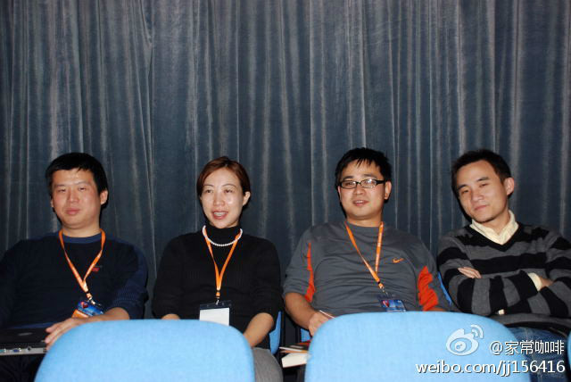
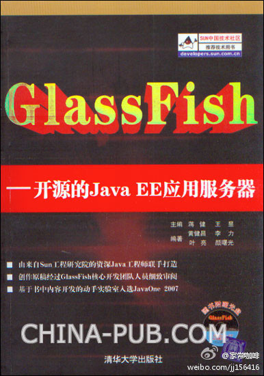

老照片又翻出来了，Jim在发什么感慨呢？[呵呵]@家常咖啡:#Java时刻# 2007年国际会议中心举行的GlassFish Day上GlassFish一书的作者合影。 照片是Arun Gupta拍的， 见其博客上的记录：网页链接 。 @Ada李力 @甲骨文Java社区 
#读书# 《海底捞你学不会》作者被首都机场请去讲课，如何提高机场人员的服务水平。他给出的方案是：别招北京城里孩子，要招聘农民工。—— 工作职责与待遇要高于员工的预期。一直抱有怀才不遇的心态，即使能力高，还是会做不好事情，所以，招人上，不要自降格以求。
可惜了，22日我在杭州。北京的同学可以去现场学学做米酒，夏天温度正合适。[呵呵]//@cleverpig:快去报名～@Ada李力@BeijingOpenParty:北京 OpenParty 6月活动““清风鸣蝉” 即将于22日（本周六）举行，已报名话题包括：My DSL、小清新版海淘插件、flash平台P2P流媒体、公益和IT的观察与对接、单身宅女一路搭车走完川藏线、传统美食及手作酒曲和麦芽糖等，欢迎大家参与。话题还在开放征集，想要分享的朋友不要错过 网页链接
#读书# 扎克伯格相信：在这个世界上，你只有一个身份。在一个极度公开和透明的社会里，人们会表现得更为负责。即使在美国，对此信念也是有不同看法，比如很多人认为，个人兴趣和职业生活是两码事，在不同环境下，展现的是不同角色。— 我更赞同后一种观点，原因可能是我不再年轻了。
 网页链接 。 @Ada李力 @甲骨文Java社区
网页链接 。 @Ada李力 @甲骨文Java社区